Build captured from the web preview (React Native Web + Skia CanvasKit) at 390×844 with no
device safe areas, so headers sit ~44 pt higher and the splash copy ~34 pt lower than in the iPhone-framed
designs. On a phone the safe area lines them up.
1 · Splash — tangled
Design · OB01
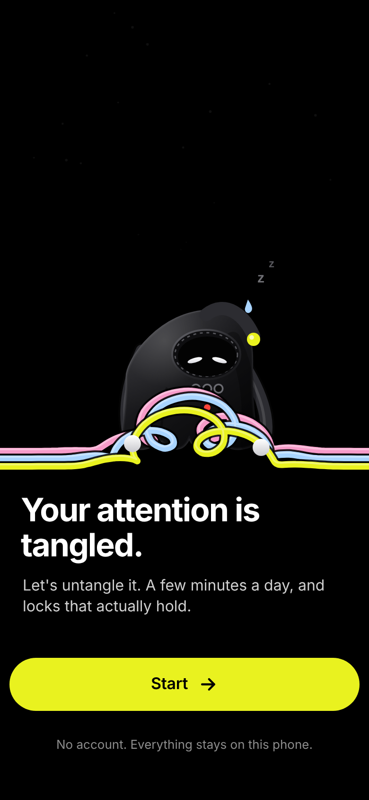
Build
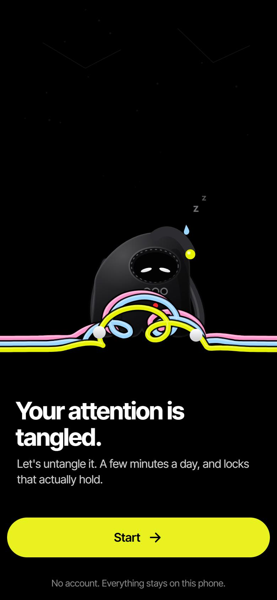
1 · Splash — untangled (same 8 s loop)
Design · OB01-untangled
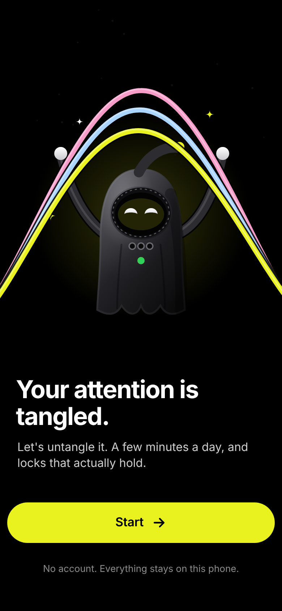
Build
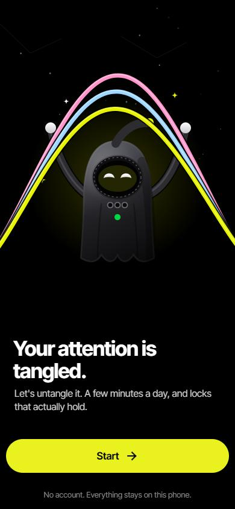
2 · Screen time (single select, pink)
Design · OB02
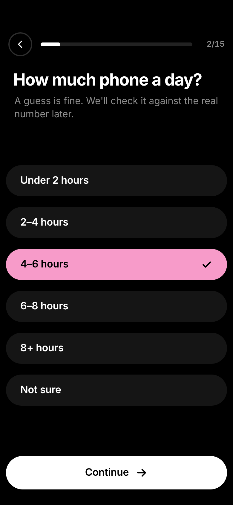
Build
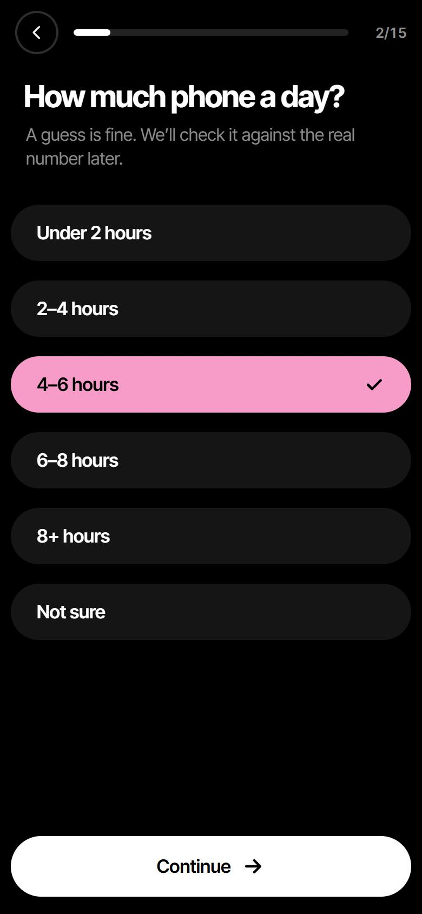
3 · Apps (chip grid, sky)
Design · OB03
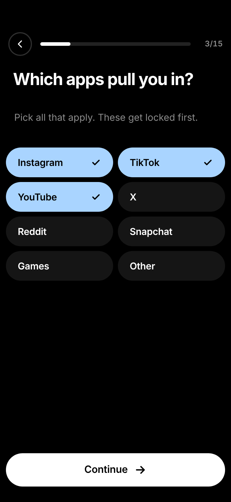
Build
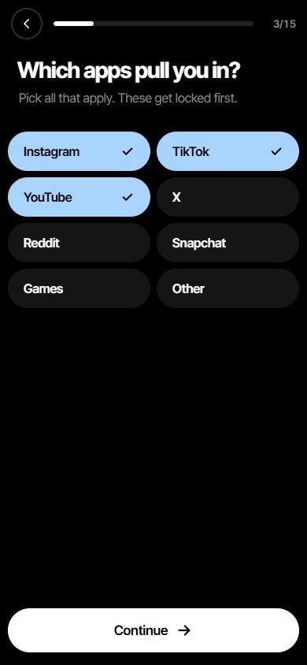
4 · When (multi select, periwinkle)
Design · OB04
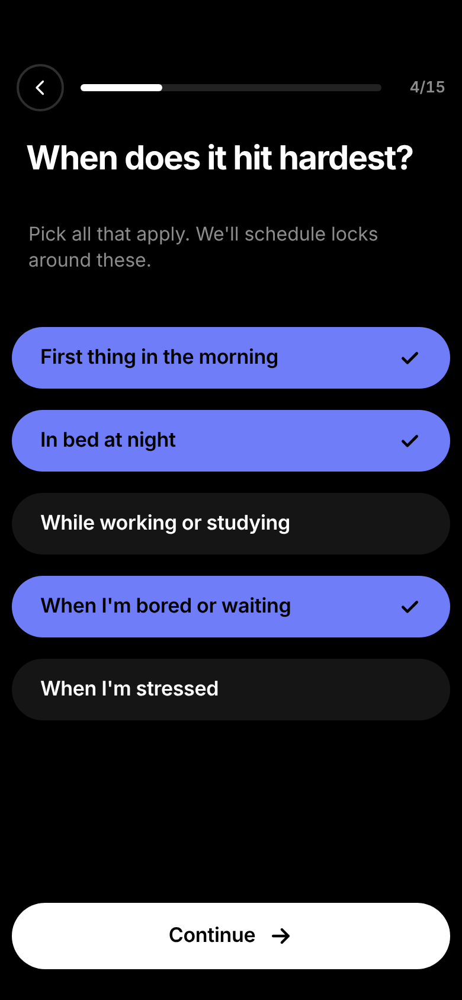
Build
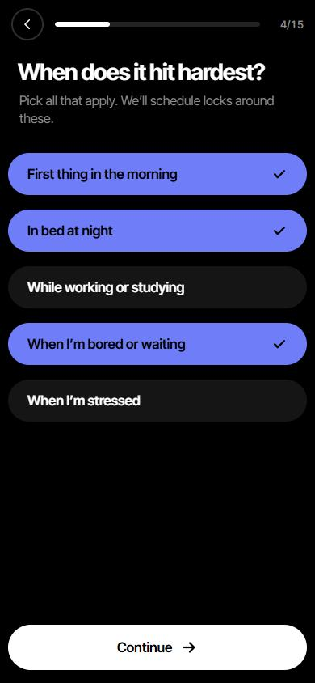
5 · Goals (max two, green, sub-lines)
Design · OB05
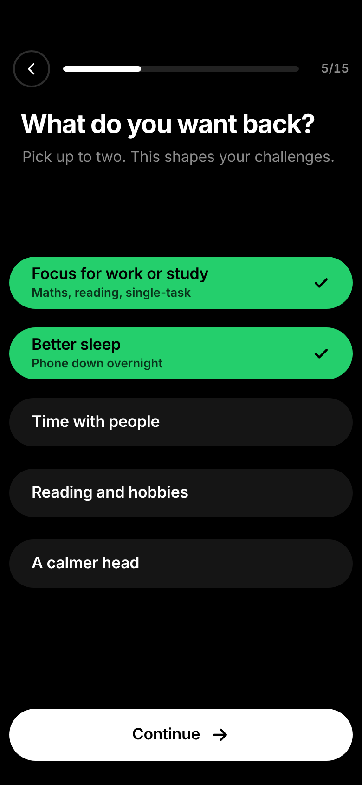
Build
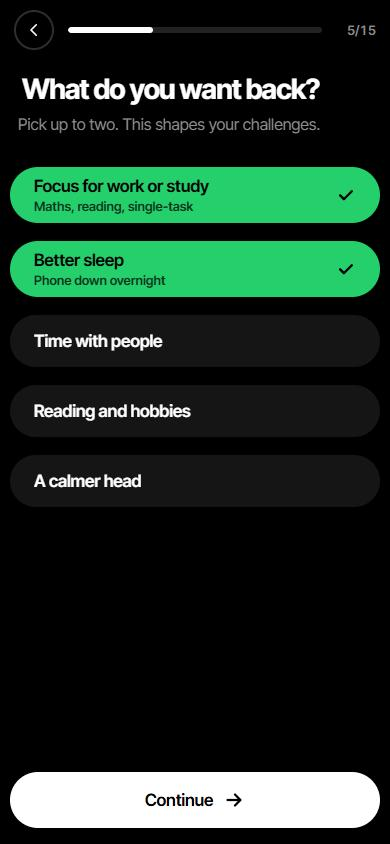
Build capture is mid-shake: the third tap ("A calmer head") was refused, so the subtitle shook.